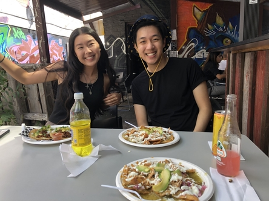

Management Engineering at UWaterloo is one of the most unique programs in the world. It facilitates one of the most flexible engineering programs, with students going into various fields across the technology front.
Personally, I chose MGTE because I have a passion for designing and managing software systems. As someone who greatly appreciates art and fashion, I love the idea of creating something both aesthetically pleasing and efficiently interactive.
I also chose Management because I'm a huge big-picture thinker. Details often don't bother me, as I've always strived for coordinating the best product instead of being someone that pushes on the small details.
About Me

Hi there! Thanks for clicking my profile!
I like to believe I have a very active life outside of the classroom, with a lot of passions that don't revolve around creating software, systems, and my favourite, calculating the rotational momentum of a rolling ball going down an incline (I'm kidding!).
Passions

If I ever have spare time (which is rare given the busy schedule UWaterloo has me on), I'm out with friends trying new things!
As someone who wants to experience everything at least once, I'm always looking for new things to explore. Whether it be niche or tourist-esque locations, strange foods, or understanding different cultures, I love discovering unique finds.